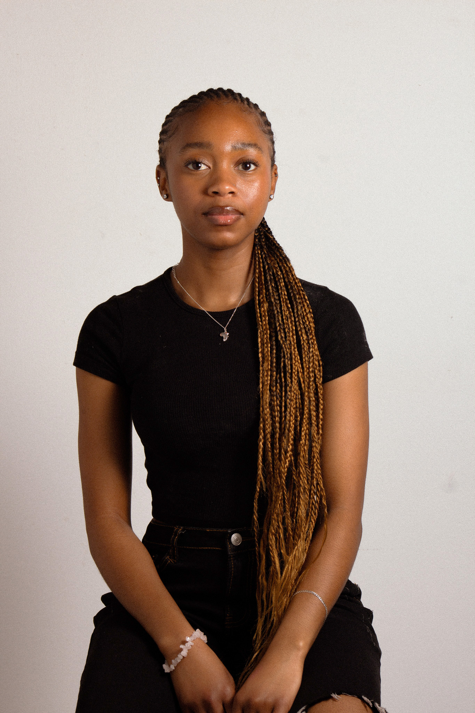

I am a multidisciplinary creative with a passion for art, design, and technology. My work sits at the intersection of visual communication and front-development, where I explore how creativity and code can work together to shape modern experiences.
